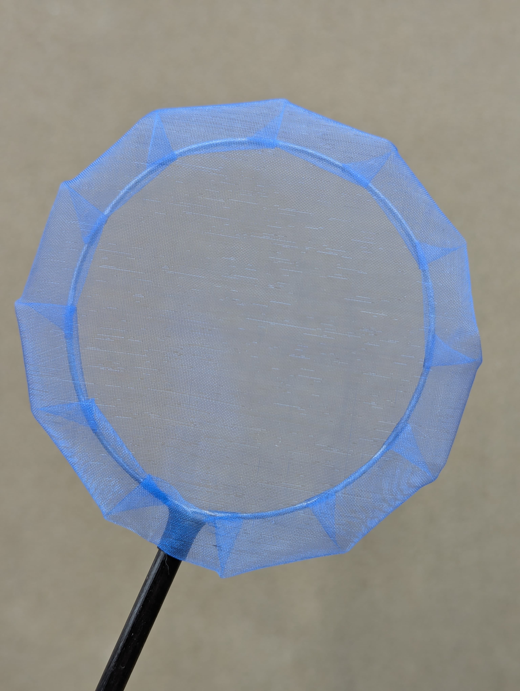

水族用品｜新竹新埔宇魚水族
手工撈網-深邃藍
現貨供應中NT$ 150 起
【宇魚水族】專業級手工撈網 溫柔呵護愛魚，給孔雀魚最頂級的撈捕體驗 在我們宇魚，我們對撈魚這件事非常講究。市面上一般的撈網材質粗糙，很容易刮傷孔雀魚嬌嫩的魚鰭與黏膜。這款手工撈網採用極細且柔軟的特殊網布，入水阻力小，能減少撈捕過程中的驚擾，並在網住魚隻時提供溫柔的包裹感。無論是日常選魚、分缸，還是精準撈取剛出生的仔魚，這把手工網都能讓你操作起來得心應手。 🔥 產品特色介紹 極致柔軟網布：專為孔雀魚研發的細網，質地滑順不傷魚鱗與魚鰭，能有效保護魚體表面的天然保護膜。 入水阻力極小：輕量化的手工架構與網目設計，在水中揮動靈活不費力，能大幅提升撈魚成功率。 支架堅固耐用：雖然是手工製作，但骨架紮實不易變形，手柄握感舒適，長時間使用也不累。
價格、規格與庫存
商品與購買資訊
- 商品編號a23
- 商品分類水族用品
- 門市位置新竹縣新埔鎮義民路二段630巷9號
- 購買方式門市挑選／網站下單；活體提供專業包裝配送
購買注意事項
🔹用防感染： 建議不同魚缸（尤其是檢疫缸或病魚缸）使用各自專屬的撈網，避免病菌透過網布交叉感染。 🔹 清洗與陰乾： 使用完畢，請務必用清水將網布沖洗乾淨，並自然陰乾。避免在網布乾透前疊放，以防止產生異味或細菌滋生。 🔹 避免陽光直射： 手工網布與手柄材質若長時間曝曬在強烈陽光下，容易導致網布脆化或變質，平時建議收納在陰涼處。 🔹 操作力道輕柔： 撈捕時動作應輕柔，避免用力在缸壁或造景上摩擦網布，以維持網面細緻度並延長使用壽命。